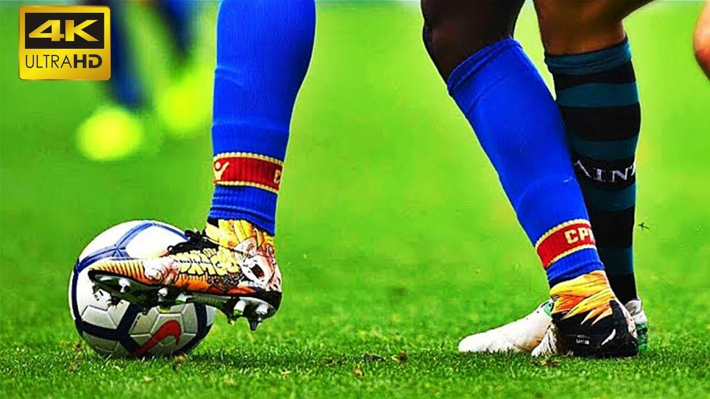
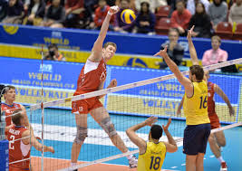
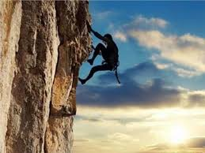
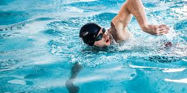

A healthy mind is in a healthy body, so we will learn about some importan sports.
| It'st a Basketball The history of basketball began with its invention in 1891 in Springfield (Massachusetts) by Canadian physical education coach James Naismith as a sport less prone to injury than soccer. The game spread very quickly, and its popularity grew with the beginning of the twentieth century it reduces stress and gives the player an opportunity to socialize, increases his ability to focus and perform tasks and accomplish them, and enhances communication skills with others, specifically working to reduce the chances of depression and thus increase the strength of the body's immune system. |
it's a football The history of this game goes back to more than 2500 years BC Continuous walking and jogging, during a soccer game, help maintain players' heart rates, providing good cardiovascular exercise. This constant movement helps players to straighten their hearts, fight plaque buildup in the coronary arteries, lower blood pressure, and burn extra calories. |
 | |
| it's a volleyball This sports originated at the hands of the former director of Holyoke University (William Morgan) in 1895 and it was named Mintonette). Volleyball helps to strengthen the muscles of the body, especially the muscles of the legs and hands, increase its flexibility, and contribute to tightening the body, which helps in getting rid of sagging, strengthens bone health and protects from osteoporosis. |
 | it's a tennis Tennis originated in England in 1873 1:Tennis has amazing benefits for children, as it strengthens muscles and prevents osteoporosis in the future. 2: Helps promote heart health and protect it from strokes and strokes. 3: It works to boost immunity and protect the body from diseases. 4: Through speed, tennis helps to revitalize and strengthen the body. |
|
| it's a mountain climbing This sport began in 1854 AD It reduces the ris000000000000k of developing cardiovascular disease Controls diabetes. |
 | it's a swimming The actual practice of swimming began as a sport in continental Europe in the year 1800 AD Improving the carrying capacity of the heart and lungs, reducing cholesterol levels. Water resistance leads to a great deal of effort that you have to put in the number of times it is more frequent. Swimming activates all muscles, especially the back, abdomen and legs. |
 |